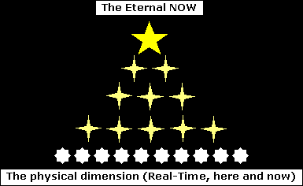

Reincarnation is in my opinion an overly simplified concept, designed to be easily understood and accepted by the general population. But the theory of reincarnation falls down sharply when closely examined. That is, if you understand how standard linear time sense behaves in higher dimensional levels, i.e., time sense fluctuates. As far as it goes, the theory of reincarnation is clear enough to explain some very complex esoteric matters in a simple way; without giving people headaches whenever they think about it. It also allows for the illusion of the continuation of present consciousness, unchanged and progressive, with only an occasional memory loss to mar its course; marking the division between each Re--Incarnation. This makes it easy for people to accept the bones of the incarnation process. It gives them the benefit of a rational afterlife belief-system containing the simplified essence of the whole truth. This allows a measure of independence and security, and a reassurance of the continuance of self, i.e., life after death and reincarnation = a kind of immortality theory that people can easily accept and relate to.
But the whole truth of reincarnation is so extraordinarily complex it is not so easily grasped.
At the top of the dimensional structure is ONE consciousness. A SINGLE mind (call it universal consciousness, The Great White Spirit, the mind of God: pick one?). Or split it into three if you like: Father, Son & Holy Spirit, or many more if you prefer the demigod perspective, i.e., Hindu beliefs, etc. However you conceive this structure, at the top of it all rests a single consciousness: the original spark of consciousness that created and is continually creating the entire multi-dimensional universe we call home. But grasping and relating to the ONE is not an easy thing to do. The ONE is so far above our understanding of what consciousness is, it becomes incomprehensible to the human mind: except of course in the abstract; which is the only realistic way this can be perceived and related to. The most popular way of relating to the ONE is through abstract simile, i.e., God is like the father of all fathers, or, God is like the mother of all mothers, et cetera.
Beneath the ONE are layers of consciousness (relating to subtle dimensional levels, i.e., the astral dimension, mental dimension, etc) where the ONE fragments and splits into multiple parts, with each lower layer splitting again and again into many more layers and parts, and so on, until you get to the physical dimension, the dimension of Maya, the dimension of solid illusion where we as energy-cum-physical beings can experience the limitations of the physical universe through our physical bodies. This, in a way, makes us human beings the myriad eyes, ears and consciousness' (in the physical dimension) of the ONE great universal mind above us.
At the very top of the dimensional spectrum, at dimension ONE, there is NO time. Mystically, this is understood and experienced as The Eternal NOW. This means there is NO TIME. There, time does not exist and everything, the past, present and future, are happening all at once in the eternal NOW. Every layer beneath this takes on a little more time sense (steadily increasing in time sense) until we get back down to the physical dimension; to our Real-Time dimension of solid illusion (our normal physical universe) where time becomes relatively linear once again.
To support this: whenever you experience higher dimensions, say during OBE, you will always notice a significant variability in time; in your sense of time passing during each experience. Modern physicists are already working mathematically in several different dimensions above but related (or linked) to the physical universe. The great physicist Einstein stated that at some point in the dimensional spectrum there must be a point where time does not exist, where past, present and future coexist simultaneously.
I have traveled to and experienced higher dimensional levels where there is NO concept of time at all. But the sensation and perception of time passing is also quite variable in the physical universe, and time sense is entirely relative to your state of mind. Look at how time flies when you are happy, say when you are spending time with someone you love. But oh how it drags and drags like a heavy stone while you are bored, or while you are waiting or experiencing something you dislike.
In a way this can be likened to a simple pyramid structure:

The above diagram shows the ascending and descending layers of the ONE consciousness, splitting into more and more parts as it descends into the real time universe (the here and now). Each part of the layers directly above the physical dimension can be more easily related to, if you consider each as being an Overself or Oversoul, or Higher Self (pick one?). In our dimension, each of these split into many separate parts (hundreds or even thousands of people; how many is unknown). And if you take into account this flow of multiple consciousness units from above, from the eternal NOW, it is also likely this spreads throughout all of time and space: possibly with each Oversoul splitting into countless people; all who have ever lived in the past, all those living in the present, and all those that will live in the future. The bottom line is that these are all living simultaneously in the shadow of The Eternal NOW. And if you also take into account the countless worlds in our universe that probably contain many other race, not to mention a plethora of parallel universes, the mind simply boggles. And yes, I think I am definitely getting a headache at this point!
If you look closely at and ponder the mind-split effect (see Astral Dynamics, or The Treatise on OBE parts 7 & 8) you'll see before you the underlying principle of incarnation at work. As above so below. And if you apply the mind-split effect to incarnation, you'll see the ONE great mind splitting and reflecting (or incarnating) into many billions of parts, into many billions of people.
Now, if you take the above as read, you will see that the linear concept of reincarnation is just a little off the mark in explaining the higher nature of reality. It leaves too many questions unanswered and has too many holes in it's logic. Its way too simplistic an explanation to fit the enormity underlying the reality of incarnation.
In my opinion, what is really happening is this:
We are all essentially a part of the ONE at the very highest level of consciousness. There is NO time at the top (or you could say there is ALL time at the top) so everything happens in the eternal NOW. Therefore, logically, a single person would incarnate throughout time: past present and future, living and experiencing multiple lives. But these are lived all at the same time, all at once, all in the eternal NOW. And therefore, if all lives are lived at once, then it is also likely each 'person' incarnates many times in the same timeframe, i.e., that you are incarnated many times in the present, and are living many different lives simultaneously in this present time, in the present NOW. This also applies to the past, present and future; meaning you are now currently living throughout all time. Scary concept maybe, and definitely headache material, but its also extremely logical.
I believe the above, with a healthy application of like-attracts-like and opposites-repel, also accounts for what are commonly called Soul Mates. Individual incarnating spirits would logically attract like-minded spirits to them from among their own spectrum of incarnating brethren, i.e., from among those incarnating from their own shared Oversoul.
The Buddhist concept of the Overself is fairly accurate in describing what is happening at a higher level of consciousness. This is a step up from the simpler concept of linear incarnation, living life after life, as taken for granted by most NewAge people today. Although the Buddhist theory also includes linear reincarnation, you will find there are many gray areas between fact, theory and experience.
Past life memories...or past life associations?
In my opinion these may be caused by closely related links (call it a soul family clan) between some spirits contained within a single Oversoul unit. These links are not limited nor divided by our primitive concept of linear time, but are all connected through the higher soul clan in the eternal NOW. They are all existing simultaneously at the higher level where they connect. Therefore, when a person remembers or feels connected with, or affected by, dramatic events from what is considered a past life filtering through into their present reality; these events are actually happening right now, in the eternal NOW. This may account for why these links can be so keenly felt. Even though the actual events that are affecting or being felt as stemming from a past life that may have happened thousands of years ago, it is actually happening right now, in the eternal NOW. And this goes a long way toward explaining why past life memories can have such a profound effect on us.
I think past life experiences can also be felt and experienced (shared) in varying degrees, by all the individual members of a closely related soul clan. They are not remembering events that happened a very long ago, they are being 'felt' and experienced by all parts as if they were actually a part of that other time, as if these events were happening NOW.
The above hopefully sheds some new light on the ancient but little-realized belief that we are all brothers and sisters in spirit, all God's children; regardless of sex or race; or even of species for that matter. Ultimately we are all ONE at the highest level, all ONE in the eternal NOW. (RB)